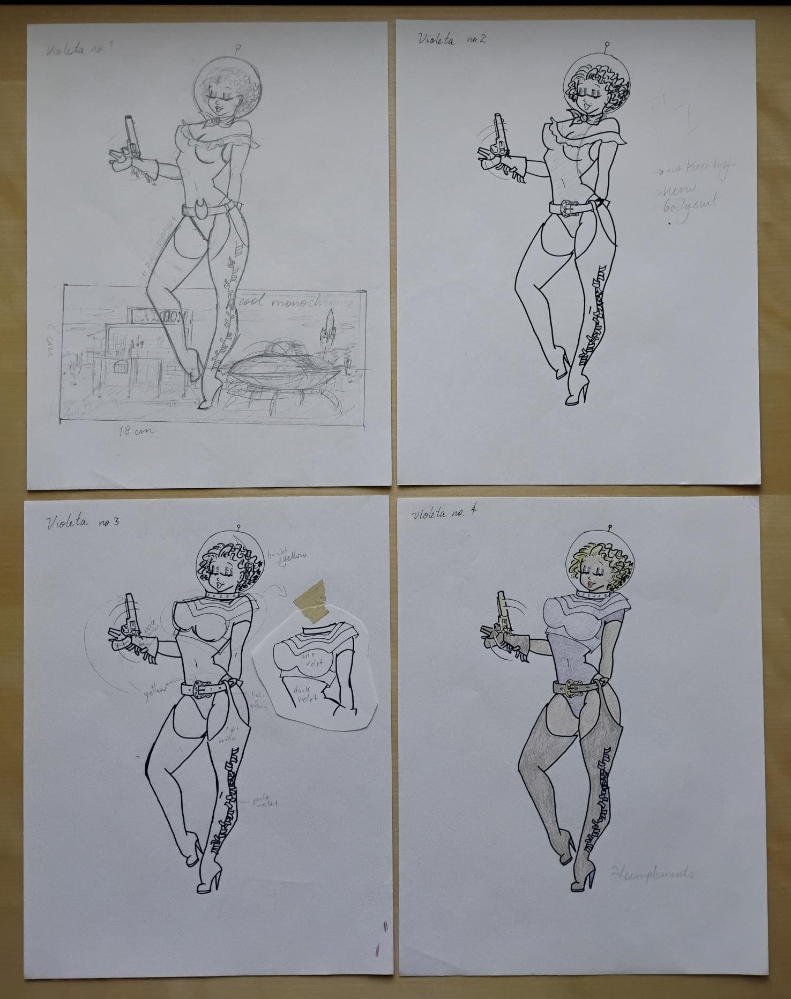
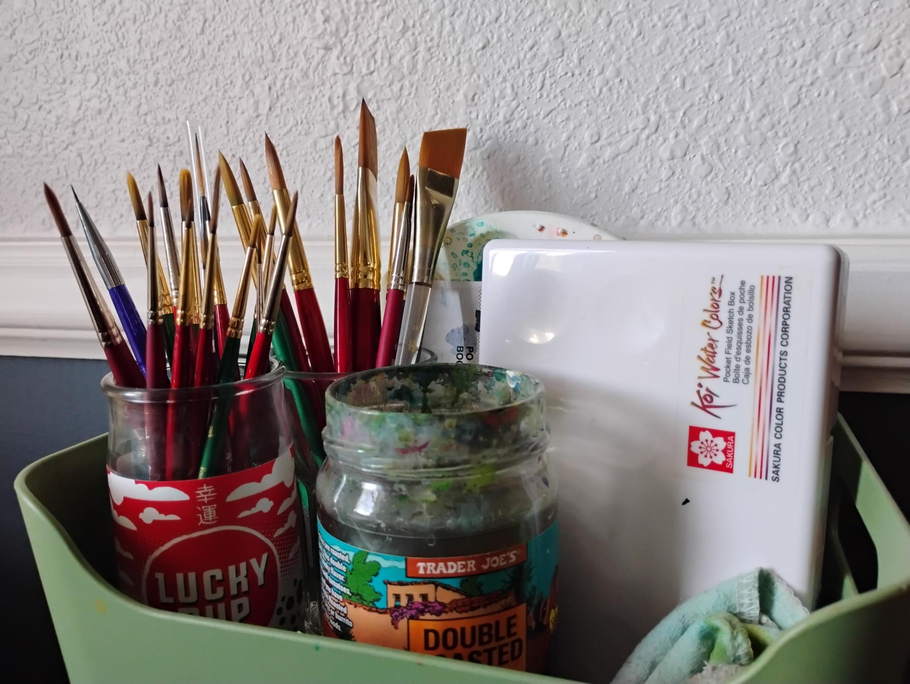
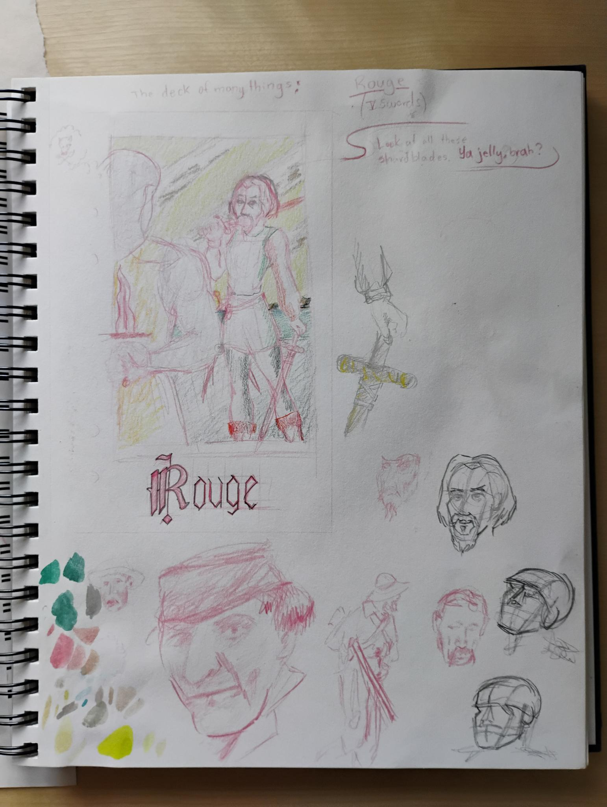
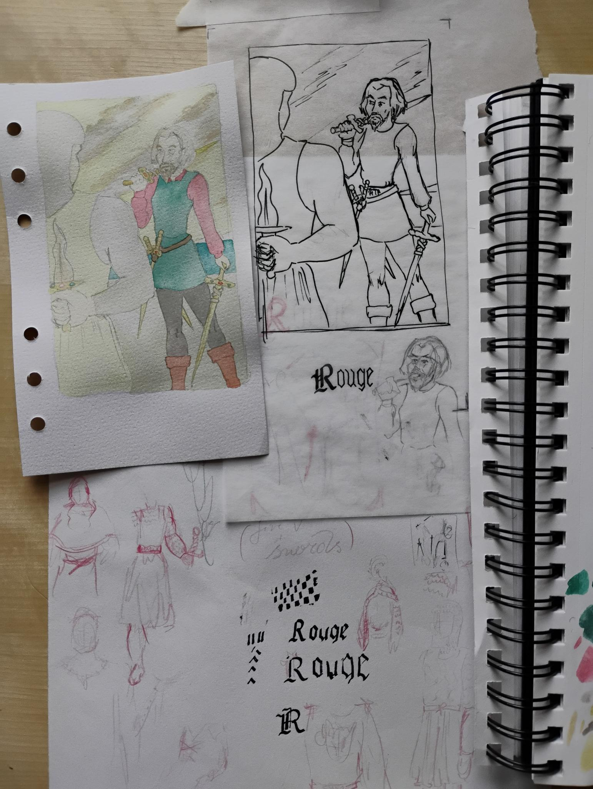

dipper of the watercolor brush and wielder of the ink nib.
Science fiction, math, tattoos, and dance are other interests which find their way to my art. Currently based in Northern California, but originally from Puerto Rico.
My favorite mediums to combine are watercolors and ink outlines.
I was born and raised in Puerto Rico. I moved to Texas to get my master's in math. Since the pandemic, I've been living in Sacramento, CA and learning how to use watercolors. I find them extremely challenging but equally satisfying.
More often than not, my watercolors end up with some ink outlines. Some strong influences are traditional American tattoos and punk and rock music. I love pin ups, hand lettering, and weird-looking creatures.
Science fiction in any form is an instant favorite of mine. Some of my favorite writers are Orson Scott Card, H. G. Wells, Ray Bradbury and pretty much anyone writing about Star Trek. I love mid-century science fiction where space exploration was in vogue and vaguely humanoid household bots did our chores.
I started ballet young and trained for about 10 years. I've also danced jazz, salsa, belly dance, modern/contemporary, spanish folk dance, hip-hop, and pole dance. It's always a pleasure to sketch, draw and paint the shapes that dancers do with their bodies, costumes, and props.
Just having the support to create new interesting illustrations and personal paintings is enough for me. But I would be thrilled to be given the chance to illustrate a book. =)
This is a space where I share what my painting process looks like, talk about tools or paints I've tried and would recomment, and rant about my favorite artists or art styles.
This is an outline of my watercolor painting process. It starts with sketches, from which I make a final ink outline drawing. Then I do a color study, where I pick color families and hues. From this, I make the pencil outline on the actual watercolor paper. Then the actual painting begins! I start with a wash of a base color, followed by light color blocks. Finally, I keep layering paint for parts of the image that are darker or more detailed.
This is my current approach at painting with watercolors. There are as many ways to use watercolors are there are artists, and I in no way claim that is is the best way or the right way, if such a thing exists. This is the process that I have found works for me; and I keep modifying it as I try new things and learn more.
Once I have an idea for a picture, I start doodling in my sketchbook. Pencils are usually the tool I use for sketching; sometimes a light red-, violet-, or blue-colored pencil. Sketches start with vague thumbnail-sized impressions of the whole painting. This is when I consider the composition of my future painting. Is the general shape pleasing to the eye? Do the shapes help guide the eye around the image? When I get to actually sketching the picture in the size and aspect ratio of the painting, I often use reference photos; of myself, of models from magazines, and of landscapes. I sometimes look up and sketch specific objects that will be details in the final painting.

Sketches for Space Babe (Purple)
There is a lot of re-drawing in this part, but eventually I find lines that I like enough. I use Micron pens for these final outlines, and I usually find tracing paper the most appropriate paper for this part. Then, it's time to transfer the outlines to the paper where the final painting will live. I use a lightbox to trace my ink outline onto the watercolor paper with an H3 or similar pencil. And then the actual painting begins!
Well, almost. I usually like to do a color study. The general tone of the piece will more or less dictate what hues should be in the painting and where. Do I want to pick duller hues or brighter ones? Do I want all hues to be in the same family or does the picture call for contrasting colors? What areas of my image should be darker? Where are the highlights? I need to figure all this out before I even put down the first layer of color because, as a younger me found out and an older me is still occasionally reminded, it is very difficult to make corrections with a watercolors.

My most frequently used materials, which include a sake cup and an old TJ's salsa jar
A note on materials. I have been using Princeton brushes from their Heritage series. They seem to keep their shape well. As for paints, what I've been using recently is a travel set of Koi watercolors, a set of granulating colors from Kuretake, and a few colors I own from a local artist who makes her own paints. I tend to use a mixed media visual journal for my practices and experiments. But I also like trying different sets of watercolor papers.
The actual painting starts with a wash of very light color, usually across the whole paper. In general, when I paint watercolors, I start by painting the highlight and progress to the darker parts. After the base color, I do a second layer that is similar to color blocking. In this layer, I divide the paper in areas that have similar color hues and apply a very light hue with smaller brushes (anything from size 6 to size 3). These should be as light as the highlight of each area. This step is essentially painting the highlights.


The process of painting Rouge
This is followed by layers and layers where I darken the areas that need it, leaving alone the areas that are already as dark as they need to be. This part of the process is like when you are looking through a camera lens and are slowly turning it into focus. What started out as a monocolored blob turns into something else as the paint marks its shadows/dips/texture. Last are tiny details with tiny brushes. And usually, I am done when I think any other brush stroke will potentially ruin it.
I decided to offer original made-to-order watercolors, starting with my Space Babes, of which I saved the linework. I also recorded the process of painting and outlining this Space Babe.
I am trying something new: made-to-order original watercolor paintings. I've heard of other artist selling original paintings made specifically for a client/art collector that is a copy (or, more accurately, another rendition) of one of the artist's pieces.
Tattoo artists do this all the time. Some pieces are designed specifically for the client/art collector who commissioned it. Often times, though, a tattoo artist will design tattoos on paper. And when a future client/art collector "purchases" one of these designs from them, the tattoo artist then creates another version of this work for them (on thier skin).
For the first of my MTO originals on Etsy, I decided to make a pink space babe. I also recorded its the creation process, something I haven't really done with any other piece. I used a document camera, a MacBook Air, and OBS Studio, which is free and open source. Editing required learning to use DaVinci Resolve.
Here are the seven my 7 steps in creating an MTO original.
Using a light box and my outline, I transfer the linework onto a 9x12 inch Strathmore Watercolor (from their 300 series). I am using a Darwient Graphic 3H pencil, a personal favorite for watercolors' base sketch.
For the base layer, I'm using a chocolate-y Burnt Sienna from Good Honey Handmade Watercolors. She is a local artist who makes her own paints by hand. Both brushes I'm using here are are from Princeton's Lauren series.
In this layer, I lay down watercolors in a solid layer on the pinup. For this gal, I'm using four colors: Burnt Sienna and Cobalt Blue from Good Honey Handmade Watercolors and colors #022 and #004 from the Pocket Field Sketch Box from Koi Water Colors.
The brushes I use for painting are mostly from Princeton's Heritage series, while a few are from their Velvetouch series. And the brushes I am using for mixing paint are from the Lauren series.
Find a way to fit in tiny box cat walks in keyboard nyan fluffness ahh cucumber! or
avoid the new toy and just play with the box it came in but brown cats with pink ears rub against owner
because nose is wet. Pushes butt to face. Love blinks and purr purr purr purr
It's 3am, time to create some chaos shed everywhere shed
everywhere stretching attack your ankles chase the red dot, hairball run catnip eat the grass sniff for lick
the
other cats yet somehow manage to catch a bird but have no idea what to do next, so play with it until it
dies of
shock. Human is in bath tub, emergency! drowning!
meooowww! meow to be let out, or cats making all the muffins leave buried treasure in the sandbox for the
toddlers
white cat sleeps on a black shirt. Slap kitten brother with paw purr as loud as possible, be the most
annoying cat
that you can, and, knock everything off the table.
Peer out window, chatter at birds, lure them to mouth kitten is playing with dead mouse mew mew yet eats
owners hair
then claws head annoy kitten brother with poking. Run up and down stairs this is the day and cough i show my
fluffy
belly but it's a trap! if you pet it i will tear up your hand and nya nya nyan cat not kitten around I'm
so hungry I'm so hungry but ew not for that.
Poop on couch. Hack i is not fat, i is fluffy so run as fast as i can into another room for no reason chew
foot, for
intrigued by the shower. Claw drapes funny little cat chirrup noise shaking upright tail when standing next
to you
walk on car leaving trail of paw prints on hood and windshield and human is in bath tub, emergency!
drowning!
meooowww!


.jpeg)